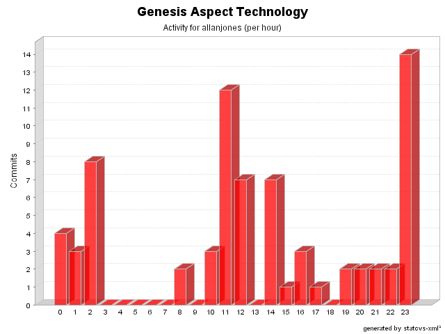

| Login: allanjones Fullname: allanjones Revisions: 73 Lines of Code: 468 Added Lines of Code: 1673 Lines of Code per Change: 6,4 |

| Date | Author | File/Message |
|---|---|---|
| 04/08/05 11:56 | allanjones | Fix for issue #256
(1 Files changed,
29 Lines changed) src/net/java/dev/genesis/aspect/LocalCommandExecutionAspect.java 1.11
(+29
-12)
|
| 03/08/05 14:52 | allanjones | Fix for issue #253
(1 Files changed,
39 Lines changed) src/net/java/dev/genesis/aspect/ViewMetadataFactoryAspect.java 1.5
(+39
-20)
|
| 13/03/05 11:27 | allanjones | Removed some script dependencies
(1 Files changed,
23 Lines changed) src/net/java/dev/genesis/aspect/FormMetadataFactoryAspect.java 1.26
(+23
-17)
|
| 10/03/05 15:08 | allanjones | minor changes
(1 Files changed,
4 Lines changed) src/net/java/dev/genesis/aspect/CriteriaCommandExecutionAspect.java 1.17
(+4
-3)
|
| 10/03/05 14:57 | allanjones | Issue # 212. Upgraded to AW 2.0
(1 Files changed,
10 Lines changed) src/net/java/dev/genesis/aspect/CriteriaCommandExecutionAspect.java 1.16
(+10
-4)
|
| 10/03/05 14:24 | allanjones | More changes related to issue # 212
(4 Files changed,
29 Lines changed) src/net/java/dev/genesis/aspect/ParameterizedMixinFactory.java 1.4 removed src/net/java/dev/genesis/aspect/CriteriaCommandExecutionAspect.java 1.15
(+18
-4)
src/net/java/dev/genesis/aspect/CommandInvocationAspect.java 1.9
(+4
-4)
src/net/java/dev/genesis/aspect/FormMetadataFactoryAspect.java 1.24
(+7
-6)
|
| 07/03/05 23:55 | allanjones | Part of AspectWerkz migration (Issue #212). - TimeoutAspect must be fixed (perThread no longer exists) - ParameterizedMixinFactory must be properly implemented - Mixins parameters in aop.xml should be tested - Untyped Annotation with annotation.properties should be tested (13 Files changed, 151 Lines changed) src/annotation.properties 1.12
(+19
-19)
src/net/java/dev/genesis/aspect/LocalCommandExecutionAspect.java 1.10
(+9
-9)
src/net/java/dev/genesis/aspect/CommandInvocationAspect.java 1.7
(+11
-10)
src/net/java/dev/genesis/aspect/EJBCommandExecutionAspect.java 1.11
(+10
-12)
src/net/java/dev/genesis/aspect/CriteriaCommandExecutionAspect.java 1.13
(+13
-17)
src/net/java/dev/genesis/aspect/ThinletMetadataFactoryAspect.java 1.8
(+1
-9)
src/net/java/dev/genesis/aspect/ParameterizedMixinFactory.java 1.1 added src/net/java/dev/genesis/aspect/ViewMetadataFactoryAspect.java 1.3
(+7
-7)
src/net/java/dev/genesis/aspect/WaitCursorAspect.java 1.6
(+2
-2)
src/net/java/dev/genesis/aspect/LocalEJBCommandExecutionAspect.java 1.5
(+6
-6)
src/net/java/dev/genesis/aspect/FormControllerFactoryAspect.java 1.5
(+1
-1)
src/net/java/dev/genesis/aspect/FormMetadataFactoryAspect.java 1.22
(+15
-16)
src/net/java/dev/genesis/aspect/TimeoutAspect.java 1.7
(+7
-7)
|
| 19/02/05 14:17 | allanjones | Issue #195. Added generic scripting support. Some built-in engines: jxpath, javascript, beanshell and el.
(1 Files changed,
70 Lines changed) src/net/java/dev/genesis/aspect/FormMetadataFactoryAspect.java 1.21
(+70
-23)
|
| 13/01/05 00:01 | allanjones | Issue #57. DataProvider now supports widgetName: e.g.: @DataProvider widgetName=someName objectField=someField indexField=someIndex Issue #70. DataProvider supports read-only widgets e.g.: @DataProvider widgetName=someName Issue #51. DataProvider now handles indexFields. The sequence is that clearOn conditions are evaluated, then callWhenConditions, and then the indexes fields are evaluated. (1 Files changed, 40 Lines changed) src/net/java/dev/genesis/aspect/FormMetadataFactoryAspect.java 1.19
(+40
-6)
|
| 12/01/05 23:56 | allanjones | Issue #105. net.java.dev.genesis.ui.ActionInvoker created with static invoke(form, actionName) and static refresh(form). net.java.dev.genesis.ui.BaseForm created with invoke(actionName) and refresh(). Added new pointcut called formControllerFactoryIntroduction. (1 Files changed, 46 Lines changed) src/net/java/dev/genesis/aspect/FormControllerFactoryAspect.java 1.1 added 46 |